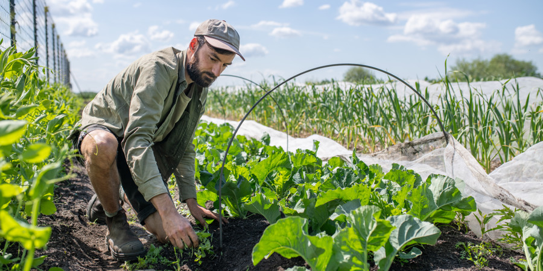
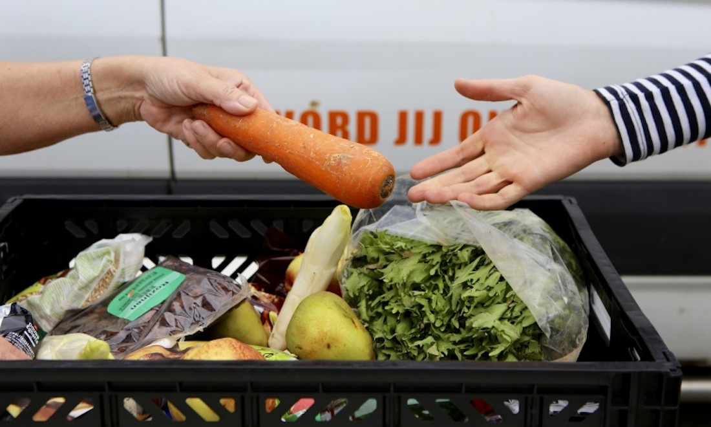

Binnen MooiMaasvallei werken inwoners, zorg- en hulpverleners, gemeenten, scholen en bedrijven samen. Zodat jij de juiste hulp, op het juiste moment, op de juiste plek krijgt. En dat jij ook in de toekomst gelukkig kunt wonen, werken en leven in onze prachtige regio.
MooiMaasvallei is voor iedereen die fijn wil leven in de gemeente Bergen, Gennep en Land van Cuijk. We bieden informatie en inspiratie om te werken aan je eigen gezondheid of de juiste hulp en zorg te vinden voor mensen in je omgeving.
Wat willen we onderzoeken?
Hoe ziet het voedselnetwerk in Land van Cuijk en de Maasvallei eruit? In deze regio wordt allerlei voedsel geproduceerd, maar hoe komt dit voedsel uiteindelijk bij de mensen terecht die het nodig hebben?
We onderzoeken welke boeren en voedselbedrijven er in de regio actief zijn, hoe hun producten worden verwerkt en vervoerd en waar ze terechtkomen. Daarbij kijken we ook naar de mogelijkheden om meer biologisch, lokaal en gezond voedsel beschikbaar te maken voor ziekenhuizen, zorginstellingen en andere maatschappelijke organisaties.
Zo brengen we niet alleen het huidige voedselnetwerk in beeld, maar ontdekken we ook waar kansen liggen om de regionale voedselketen te versterken.

